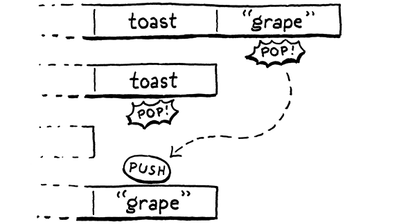

类和实例
过分关心对象会毁了你。只是——如果你足够关心一件事，它就会拥有自己的生命，不是吗？事物的全部意义——美丽的事物——难道不就是它们将你与某种更大的美联系起来吗？
-- Donna Tartt,The Goldfinch
clox 中最后一个需要实现的领域是面向对象编程。OOP是一组相互交织的特性：类、实例、字段、方法、初始化器和继承。使用相对高级的 Java，我们将所有内容打包成两章。现在我们正在用 C 编写代码，这感觉就像用牙签建造埃菲尔铁塔的模型，我们将用三个章节来介绍相同的领域。这使得从容地漫步在实现过程中。在诸如闭包和垃圾收集器之类的艰苦章节之后，您已经获得了休息。事实上，这本书从现在开始应该很容易。
对面向对象编程有强烈看法的人——读作“每个人”——倾向于认为 OOP 意味着一些非常具体的语言特性列表，但实际上有一个完整的探索空间，每种语言都有自己的成分和配方。
Self 有对象但没有类。CLOS 有方法但不将它们附加到特定类。C++ 最初没有运行时多态性——没有虚拟方法。Python 有多重继承，而 Java 没有。Ruby 将方法附加到类，但您也可以在单个对象上定义方法。
在本章中，我们介绍了前三个特性：类、实例和字段。这是面向对象的状态方面。然后在接下来的两章中，我们将暂停这些对象的行为和代码重用。
27.1 类对象
在基于类的面向对象语言中，一切都从类开始。它们定义了程序中存在的对象类型以及用于生成新实例的工厂。自下而上，我们将从它们的运行时表示开始，然后将其连接到语言中。
至此，我们已经非常熟悉向 VM 添加新对象类型的过程。我们从一个结构开始。
} ObjClosure;
typedef struct {
Obj obj;
ObjString* name;
} ObjClass;
ObjClosure* newClosure(ObjFunction* function);
// object.h, add after struct ObjClosure
在 Obj 头之后，我们存储类的名称。这并不是用户程序所必需的，但它可以在运行时显示堆栈跟踪等内容的名称。
新类型需要 ObjType 枚举中的相应大小写。
typedef enum {
OBJ_CLASS,
OBJ_CLOSURE,
// object.h, in enum ObjType
那个类型得到一对相应的宏。首先，测试一个对象的类型：
#define OBJ_TYPE(value) (AS_OBJ(value)->type)
#define IS_CLASS(value) isObjType(value, OBJ_CLASS)
#define IS_CLOSURE(value) isObjType(value, OBJ_CLOSURE)
// object.h
然后将 Value 转换为 ObjClass 指针：
#define IS_STRING(value) isObjType(value, OBJ_STRING)
#define AS_CLASS(value) ((ObjClass*)AS_OBJ(value))
#define AS_CLOSURE(value) ((ObjClosure*)AS_OBJ(value))
// object.h
VM 使用此函数创建新的类对象：
} ObjClass;
ObjClass* newClass(ObjString* name);
ObjClosure* newClosure(ObjFunction* function);
// object.h, add after struct ObjClass
实现在这里：
ObjClass* newClass(ObjString* name) {
ObjClass* klass = ALLOCATE_OBJ(ObjClass, OBJ_CLASS);
klass->name = name;
return klass;
}
// object.c, add after allocateObject()
几乎所有样板。它将类的名称作为字符串接收并存储。每次用户声明一个新类时，VM 都会创建一个新的 ObjClass 结构来表示它。

我将变量命名为“klass”，不仅仅是为了给 VM 一种滑稽的学前班“Kidz Korner”感觉。它使得将 clox 编译为 C++ 变得更容易，其中“类”是保留字。
当 VM 不再需要某个类时，它会像这样释放它：
switch (object->type) {
case OBJ_CLASS: {
FREE(ObjClass, object);
break;
}
case OBJ_CLOSURE: {
// memory.c, in freeObject()
这里的大括号现在毫无意义，但在下一章中我们向 switch case 添加更多代码时会很有用。
我们现在有一个内存管理器，所以我们还需要支持通过类对象进行跟踪。
switch (object->type) {
case OBJ_CLASS: {
ObjClass* klass = (ObjClass*)object;
markObject((Obj*)klass->name);
break;
}
case OBJ_CLOSURE: {
// memory.c, in blackenObject()
当 GC 到达一个类对象时，它会标记该类的名称以使该字符串也保持活动状态。
VM 可以对类执行的最后一个操作是打印它。
switch (OBJ_TYPE(value)) {
case OBJ_CLASS:
printf("%s", AS_CLASS(value)->name->chars);
break;
case OBJ_CLOSURE:
// object.c, in printObject()
一个类只是说出它自己的名字。
27.2 类声明
运行时表示在手，我们准备为语言添加对类的支持。接下来，我们进入解析器。
static void declaration() {
if (match(TOKEN_CLASS)) {
classDeclaration();
} else if (match(TOKEN_FUN)) {
funDeclaration();
// compiler.c, in declaration(), replace 1 line
类声明是语句，解析器通过前导class关键字识别一个。其余的编译发生在这里：
static void classDeclaration() {
consume(TOKEN_IDENTIFIER, "Expect class name.");
uint8_t nameConstant = identifierConstant(&parser.previous);
declareVariable();
emitBytes(OP_CLASS, nameConstant);
defineVariable(nameConstant);
consume(TOKEN_LEFT_BRACE, "Expect '{' before class body.");
consume(TOKEN_RIGHT_BRACE, "Expect '}' after class body.");
}
// compiler.c, add after function()
紧跟在class关键字之后的是类的名称。我们获取该标识符并将其作为字符串添加到周围函数的常量表中。如您所见，打印一个类会显示其名称，因此编译器需要将名称字符串填充到运行时可以找到的某个位置。常量表是做到这一点的方法。
类名也用于将类对象绑定到同名变量。因此，我们在使用其token后立即声明一个具有该标识符的变量。
我们可以让类声明成为表达式而不是语句——它们本质上是一个产生值的文字。然后用户必须明确地将类绑定到自己的变量，例如：
js var Pie = class {}有点像 lambda 函数，但用于类。但是由于我们通常希望类无论如何都被命名，所以将它们视为声明是有意义的。
接下来，我们发出一条新指令以在运行时实际创建类对象。该指令将类名称的常量表索引作为操作数。
之后，但在编译类主体之前，我们为类名定义变量。声明变量将它添加到作用域中，但回想一下前一章我们不能使用变量直到它被定义。对于类，我们在主体之前定义变量。这样，用户可以在其自己的方法体内引用包含类。这对于生成类的新实例的工厂方法之类的东西很有用。
最后，我们编译主体。我们还没有方法，所以现在它只是一对空括号。Lox 不需要在类中声明字段，所以现在已经完成了主体和解析器。
编译器正在发出一条新指令，所以让我们定义它。
OP_RETURN,
OP_CLASS,
} OpCode;
// chunk.h, in enum OpCode
并将其添加到反汇编程序中：
case OP_RETURN:
return simpleInstruction("OP_RETURN", offset);
case OP_CLASS:
return constantInstruction("OP_CLASS", chunk, offset);
default:
// debug.c, in disassembleInstruction()
对于这样一个看起来很大的功能，解释器的支持是最少的。
break;
}
case OP_CLASS:
push(OBJ_VAL(newClass(READ_STRING())));
break;
}
// vm.c, in run()
我们从常量表中加载类名称的字符串并将其传递给newClass().这将创建一个具有给定名称的新类对象。将其推入栈，我们很好。如果该类绑定到全局变量，则编译器调用defineVariable()将发出代码以将该对象从堆栈存储到全局变量表中。否则，它就在新局部变量需要在堆栈上的位置。
“本地”类——在函数或块内部声明的类，是一个不寻常的概念。许多语言根本不允许它们。但由于 Lox 是一种动态类型的脚本语言，它统一处理程序的顶层以及函数和块的主体。类只是另一种声明，因为您可以在块内声明变量和函数，所以您也可以在其中声明类。
好了，我们的 VM 现在支持类了。你可以运行这个：
class Brioche {}
print Brioche;
不幸的是，打印几乎是您可以对类进行的所有操作，所以下一步是使它们更有用。
27.3 类的实例
类在语言中有两个主要目的：
-
它们是创建新实例的方式。有时这涉及
new关键字，有时它是对类对象的方法调用，通常会以某种方式通过名称提及类以获取新实例。 -
它们包含方法。这些定义了该类的所有实例的行为方式。
我们要到下一章才会谈到方法，所以现在我们只关心第一部分。在类可以创建实例之前，我们需要它们的表示。
} ObjClass;
typedef struct {
Obj obj;
ObjClass* klass;
Table fields;
} ObjInstance;
ObjClass* newClass(ObjString* name);
// object.h, add after struct ObjClass
实例知道它们的类——每个实例都有一个指向它所属类的指针。我们在本章中不会用到这么多，但是当我们添加方法时它会变得很关键。
本章更重要的是实例如何存储它们的状态。Lox 允许用户在运行时自由地向实例添加字段。这意味着我们需要一种可以增长的存储机制。可以使用动态数组，但也希望尽快按名称查找字段。有一种数据结构非常适合通过名称快速访问一组值，而且——甚至更方便——我们已经实现了它。每个实例都使用哈希表存储其字段。
能够在运行时自由地向对象添加字段是大多数动态语言和静态语言之间的一个很大的实际区别。静态类型语言通常需要显式声明字段。这样，编译器就可以确切地知道每个实例有哪些字段。它可以使用它来确定每个实例所需的精确内存量以及可以在该内存中找到每个字段的偏移量。
在 Lox 和其他动态语言中，访问字段通常是哈希表查找。常数时间，但仍然相当重量级。在像 C++ 这样的语言中，访问一个字段就像用一个整数常量偏移一个指针一样快。
我们只需要添加一个包含，就搞定了。
#include "chunk.h"
#include "table.h"
#include "value.h"
// object.h
这个新结构获得了一个新的对象类型。
OBJ_FUNCTION,
OBJ_INSTANCE,
OBJ_NATIVE,
// object.h, in enum ObjType
我想在这里放慢一点，因为 Lox语言的“类型”概念和 VM实现的“类型”概念以可能令人困惑的方式相互冲突。在生成 clox 的 C 代码中，有许多不同类型的 Obj——?ObjString、ObjClosure 等。每个都有自己的内部表示和语义。
在 Lox语言中，用户可以定义他们自己的类——比如 Cake 和 Pie——然后创建这些类的实例。从用户的角度来看，Cake 实例与 Pie 实例是不同类型的对象。但是，从 VM 的角度来看，用户定义的每个类都只是 ObjClass 类型的另一个值。同样，用户程序中的每个实例，无论它是哪个类的实例，都是一个 ObjInstance。一个 VM 对象类型涵盖所有类的实例。这两个世界像这样相互映射：

知道了？OK，回到实现。我们也得到了我们常用的宏。
#define IS_FUNCTION(value) isObjType(value, OBJ_FUNCTION)
#define IS_INSTANCE(value) isObjType(value, OBJ_INSTANCE)
#define IS_NATIVE(value) isObjType(value, OBJ_NATIVE)
// object.h
和：
#define AS_FUNCTION(value) ((ObjFunction*)AS_OBJ(value))
#define AS_INSTANCE(value) ((ObjInstance*)AS_OBJ(value))
#define AS_NATIVE(value) \
// object.h
由于字段是在创建实例后添加的，因此“构造函数”函数只需要知道类。
ObjFunction* newFunction();
ObjInstance* newInstance(ObjClass* klass);
ObjNative* newNative(NativeFn function);
// object.h, add after newFunction()
我们在这里实现该功能：
ObjInstance* newInstance(ObjClass* klass) {
ObjInstance* instance = ALLOCATE_OBJ(ObjInstance, OBJ_INSTANCE);
instance->klass = klass;
initTable(&instance->fields);
return instance;
}
// object.c, add after newFunction()
我们存储对实例类的引用。然后将字段表初始化为一个空的哈希表。一个新的婴儿对象诞生了！
在实例生命周期的末尾，它会被释放。
FREE(ObjFunction, object);
break;
}
case OBJ_INSTANCE: {
ObjInstance* instance = (ObjInstance*)object;
freeTable(&instance->fields);
FREE(ObjInstance, object);
break;
}
case OBJ_NATIVE:
// memory.c, in freeObject()
该实例拥有其字段表，因此在释放该实例时，我们也释放了该表。我们没有显式释放表中的条目，因为可能还有对这些对象的其他引用。垃圾收集器会为我们处理这些。这里我们只释放表本身的条目数组。
说到垃圾收集器，它需要支持通过实例进行跟踪。
markArray(&function->chunk.constants);
break;
}
case OBJ_INSTANCE: {
ObjInstance* instance = (ObjInstance*)object;
markObject((Obj*)instance->klass);
markTable(&instance->fields);
break;
}
case OBJ_UPVALUE:
// memory.c, in blackenObject()
如果实例还活着，我们需要保留它的类。此外，需要保留实例字段引用的每个对象。大多数不是根的活动对象都是可访问的，因为某些实例引用字段中的对象。幸运的是，我们已经有了一个很好的markTable()函数来使跟踪它们变得容易。
不太重要但仍然重要的是打印。
break;
case OBJ_INSTANCE:
printf("%s instance",
AS_INSTANCE(value)->klass->name->chars);
break;
case OBJ_NATIVE:
// object.c, in printObject()
实例打印其名称后跟“instance”。（“实例”部分主要是为了让类和实例不会打印相同的内容。）
大多数面向对象的语言都让类定义某种
toString()?方法，让类指定如何将其实例转换为字符串并打印出来。如果 Lox 不是一种玩具语言，我也会支持它。
真正的乐趣发生在解释器身上。Lox 没有特殊的new关键字。创建类实例的方法是像调用函数一样调用类本身。运行时已经支持函数调用，它会检查被调用对象的类型以确保用户不会尝试调用数字或其他无效类型。
我们用一个新case 扩展了运行时检查。
switch (OBJ_TYPE(callee)) {
case OBJ_CLASS: {
ObjClass* klass = AS_CLASS(callee);
vm.stackTop[-argCount - 1] = OBJ_VAL(newInstance(klass));
return true;
}
case OBJ_CLOSURE:
// vm.c, in callValue()
如果被调用的值——计算左括号左侧的表达式时产生的对象——是一个类，那么我们将其视为构造函数调用。我们创建一个被调用类的新实例并将结果存储在栈中。
我们暂时忽略传递给调用的任何参数。当我们添加对初始化器的支持时，我们将在下一章重新访问这段代码。
我们更进一步了。现在我们可以定义类并创建它们的实例。
class Brioche {}
print Brioche();
现在请注意第二行Brioche后面的括号。这将打印“Brioche instance”。
27.4 get和set 表达式
实例对象表示已经可以存储状态，所以剩下的就是向用户公开该功能。使用 get 和 set 表达式访问和修改字段。Lox 不打破传统，它使用经典的“点”语法：
eclair.filling = "pastry creme";
print eclair.filling;
句点——对我的英国朋友来说是句号——有点像中缀运算符。左边有一个表达式首先被求值并产生一个实例。之后是.字段名称。由于前面有一个操作数，我们将其作为中缀表达式挂接到解析表中。
我说“有点像”是因为在
.之后的右侧不是表达式，而是一个标识符，其语义由 get 或 set 表达式本身处理。它真的更接近于后缀表达式。
[TOKEN_COMMA] = {NULL, NULL, PREC_NONE},
[TOKEN_DOT] = {NULL, dot, PREC_CALL},
[TOKEN_MINUS] = {unary, binary, PREC_TERM},
// compiler.c, replace 1 line
与其他语言一样，.运算符紧密绑定，优先级与函数调用中的括号一样高。解析器使用点token后，它会分派给新的解析函数。
static void dot(bool canAssign) {
consume(TOKEN_IDENTIFIER, "Expect property name after '.'.");
uint8_t name = identifierConstant(&parser.previous);
if (canAssign && match(TOKEN_EQUAL)) {
expression();
emitBytes(OP_SET_PROPERTY, name);
} else {
emitBytes(OP_GET_PROPERTY, name);
}
}
// compiler.c, add after call()
解析器希望在点之后立即找到一个属性名称。我们将该token的词素作为字符串加载到常量表中，以便该名称在运行时可用。
编译器在这里使用“属性”而不是“字段”，因为请记住，Lox 还允许您使用点语法来访问方法而不调用它。“属性”是我们用来指代您可以在实例上访问的任何命名实体的通用术语。字段是由实例状态支持的属性的子集。
我们有两种新的表达式形式——getter和 setter——由这个函数处理。如果我们在字段名称后看到一个等号，它一定是一个赋值给字段的集合表达式。但我们并不总是允许在要编译的字段后使用等号。考虑：
a + b.c = 3
根据 Lox 的语法，这在句法上是无效的，这意味着我们的 Lox 实现有义务检测并报告错误。如果dot()静默解析该= 3部分，我们将错误地解释代码，就好像用户编写了：
a + (b.c = 3)
问题在set表达式中=部分优先级比.部分低得多。解析器可能会在优先级过高而不允许 setter 出现的上下文 中调用dot()。为避免错误地允许，我们仅在canAssign为真时才解析和编译=部分。如果在canAssign为 false时出现等号标记，dot()则不理会它并返回。在这种情况下，编译器最终将展开到parsePrecedence()，如果下一个token 仍然是一个意外的=，编译器会停止并报告错误。
如果我们在允许的上下文中找到=，那么将编译后面的表达式。之后，发出一条新OP_SET_PROPERTY指令。这需要一个操作数作为常量表中属性名称的索引。如果我们没有编译一个set表达式，我们假设它是一个 getter 并发出一条OP_GET_PROPERTY指令，该指令也接受一个操作数作为属性名称。
您不能设置非字段属性，所以我认为该指令可能是
OP_SET_FIELD，但我认为与 get 指令保持一致看起来更好。
现在是定义这两条新指令的好时机。
OP_SET_UPVALUE,
OP_GET_PROPERTY,
OP_SET_PROPERTY,
OP_EQUAL,
// chunk.h, in enum OpCode
并添加对反汇编它们的支持：
return byteInstruction("OP_SET_UPVALUE", chunk, offset);
case OP_GET_PROPERTY:
return constantInstruction("OP_GET_PROPERTY", chunk, offset);
case OP_SET_PROPERTY:
return constantInstruction("OP_SET_PROPERTY", chunk, offset);
case OP_EQUAL:
// debug.c, in disassembleInstruction()
27.4.1 解释 getter 和 setter 表达式
滑到运行时，我们将从 get 表达式开始，因为它们更简单一些。
}
case OP_GET_PROPERTY: {
ObjInstance* instance = AS_INSTANCE(peek(0));
ObjString* name = READ_STRING();
Value value;
if (tableGet(&instance->fields, name, &value)) {
pop(); // Instance.
push(value);
break;
}
}
case OP_EQUAL: {
// vm.c, in run()
当解释器到达这条指令时，点左边的表达式已经被执行，结果实例在栈顶。我们从常量池中读取字段名，并在实例的字段表中查找。如果哈希表包含具有该名称的条目，我们将弹出该实例并将条目的值作为结果push。
当然，该字段可能不存在。在 Lox 中，将其定义为运行时错误。因此，我们为此添加了一个检查，如果发生了则中止。
push(value);
break;
}
runtimeError("Undefined property '%s'.", name->chars);
return INTERPRET_RUNTIME_ERROR;
}
case OP_EQUAL: {
// vm.c, in run()
您可能已经注意到了另一种需要处理的故障模式。上面的代码假设 点左边的表达式计算为一个 ObjInstance。但是没有什么可以阻止用户这样写：
var obj = "not an instance";
print obj.field;
用户的程序出错了，但 VM 仍然需要优雅地处理它。现在，它会将 ObjString 的位错误解释为 ObjInstance 并且，我不知道，着火或其他绝对不优雅的事情。
在 Lox 中，只允许实例有字段。不能将字段填充到字符串或数字上。所以需要在访问它的任何字段之前检查该值是否是一个实例。
Lox可以支持向其他类型的值添加字段。这是我们的语言，我们可以做我们想做的事。但这可能是个坏主意。它以损害性能的方式使实现变得非常复杂——例如，字符串驻留变得更加困难。
此外，它还提出了围绕价值的相等和同一性的粗糙语义问题。如果我将一个字段附加到 number
3，结果是否1 + 2也有该字段？如果是这样，实施如何跟踪？如果不是，那么这两个结果“三”是否仍然被认为是相等的？
case OP_GET_PROPERTY: {
if (!IS_INSTANCE(peek(0))) {
runtimeError("Only instances have properties.");
return INTERPRET_RUNTIME_ERROR;
}
ObjInstance* instance = AS_INSTANCE(peek(0));
// vm.c, in run()
如果栈上的值不是实例，我们将报告运行时错误并安全退出。
当然，当没有实例有任何字段时，get 表达式不是很有用。为此，我们需要二传手
return INTERPRET_RUNTIME_ERROR;
}
case OP_SET_PROPERTY: {
ObjInstance* instance = AS_INSTANCE(peek(1));
tableSet(&instance->fields, READ_STRING(), peek(0));
Value value = pop();
pop();
push(value);
break;
}
case OP_EQUAL: {
// vm.c, in run()
这比 OP_GET_PROPERTY稍微复杂一点。执行此操作时，栈顶部具有要设置其字段的实例，其上方是要存储的值。像以前一样，我们读取指令的操作数并找到字段名称字符串。使用它，将栈顶部的值存储到实例的字段表中。
之后是一些栈杂耍。我们弹出存储的值，然后弹出实例，最后将值推回。换句话说，我们从堆栈中移除第二个元素，同时保留顶部元素。setter 本身是一个表达式，其结果是分配的值，因此我们需要将该值留在堆栈上。这就是我的意思：
堆栈操作是这样的：

class Toast {}
var toast = Toast();
print toast.jam = "grape"; // Prints "grape".
与读取字段时不同，我们无需担心哈希表不包含该字段。如果需要，setter 会隐式创建该字段。我们确实需要处理用户错误地尝试将字段存储在不是实例的值上。
case OP_SET_PROPERTY: {
if (!IS_INSTANCE(peek(1))) {
runtimeError("Only instances have fields.");
return INTERPRET_RUNTIME_ERROR;
}
ObjInstance* instance = AS_INSTANCE(peek(1));
vm.c, in run()
与 get 表达式完全一样，我们检查值的类型并在它无效时报告运行时错误。并且，Lox 对面向对象编程的支持的有状态方面已经到位。试一试：
class Pair {}
var pair = Pair();
pair.first = 1;
pair.second = 2;
print pair.first + pair.second; // 3.
这真的感觉不是很面向对象。它更像是一种奇怪的、动态类型化的 C 变体，其中对象是松散的类似结构的数据包。一种动态过程语言。但这是表现力的一大步。我们的 Lox 实现现在允许用户自由地将数据聚合成更大的单元。在下一章中，我们将为那些惰性的块注入生命。
挑战
- 尝试访问对象上不存在的字段会立即中止整个 VM。用户无法从此运行时错误中恢复，也无法在尝试访问某个字段之前查看它是否存在。由用户自行确保只读取有效字段。
其他动态类型语言如何处理缺失的字段？你觉得Lox应该怎么做？实现您的解决方案。
-
在运行时通过字符串名称访问字段。但该名称必须始终作为标识符token直接出现在源代码中。用户程序不能强制性地构建一个字符串值，然后将其用作字段的名称。你认为他们应该能够吗？设计一种语言功能来实现它并实现它。
-
相反，Lox 没有提供从实例中删除字段的方法。您可以将字段的值设置为
nil，但哈希表中的条目仍然存在。其他语言如何处理这个问题？为 Lox 选择并实施策略。 -
因为在运行时按名称访问字段，所以使用实例状态很慢。从技术上讲，这是一个恒定时间的操作——感谢哈希table——但常数因子相对较大。这是动态语言比静态类型语言慢的主要原因。
动态类型语言的复杂实现如何处理和优化它？